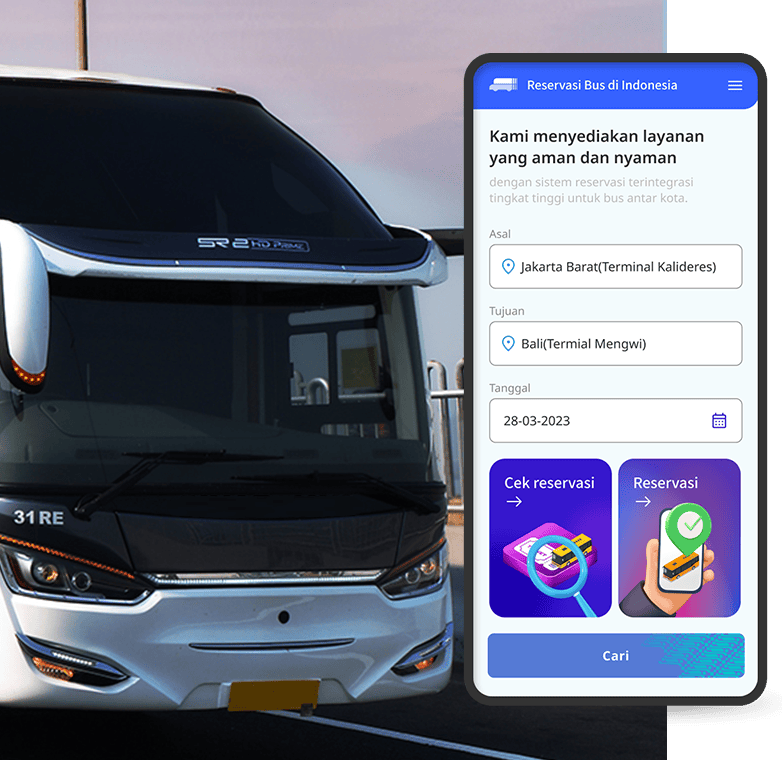
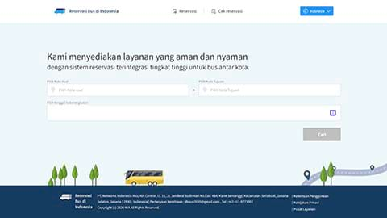

Make the world more creative
Business Portfolio

매표발권 및 예약ㆍ예매 시스템
저희의 주요 제품 및 서비스는 매표발권 및 예약•예매 시스템으로 본 솔루션을 통해 고객이 신뢰할 수 있는 효율적인 매표발권 및 예약•예매 경험을 제공합니다. 현대적 기술이 접목된 NIA의 매표발권 및 예약•예매 서비스는 고객들에게 여정 및 여행 계획에서의 편리함을 제공하며 쉽고 편리한 티켓 구매 서비스를 제공합니다.
스마트 터미널-

보고서 및 통계자료를 통한 최신 핵심 비즈니스 분석 제공
보고서 및 통계자료를 통해 핵심 비즈니스 분석 정보를 제공하며 본 데이터를 활용한 비즈니스 성과 분석이 가능하여 전략적으로 보다 정확한 결정을 내리는데 도움을 줍니다. -
무인 발권기(키오스크) 및 매표소를 통한 오프라인 예약ㆍ예매 서비스
무인 발권기(키오스크) 및 매표소 서비스를 통해 오프라인 예약•예매 서비스를 제공하며 이를 통해 고객들은 현장에서 손쉽게 서비스를 이용할 수 있습니다. 이러한 기능은 편리한 접근과 거래 효율성을 제공하여 원활하고 효율적인 고객 경험을 보장하도록 설계되었습니다.
보유 기술 확대 및 적용 가능 분야
교통
엔터테인먼트
음식점ㆍ카페
기타 경험 등
NIA가 직접 참여한 사업
인도네시아 버스터미널 현대화


인도네시아 버스터미널 현대화
NIA는 대한민국 국토교통부 및 인도네시아 교통부의 ODA(공적개발원조)사업인 인도네시아 버스터미널 현대화 사업을 성공적으로 완수하였으며 본 사업을 통하여 시범운영을 시행한 2개의 터미널은 동부 자카르타에 위치한 캄풍 람부탄 터미널 및 반둥시에 위치한 레우위판장 터미널입니다.
본 사업을 통하여 시스템 구축을 포함하여 시설 및 환경개선 공사까지 진행하였으며 저희가 제공하는 주요 시스템 중 하나는 매표발권 및 온라인 예약•예약 시스템입니다.
-

무인 발권기(키오스크)
무인발권기(키오스크)를 통하여 고객은 스스로 무현금 결제 티켓을 발권가능하며, 버스일정 예약 기능을 제공하는 시스템입니다. - 
-

매표발권 시스템
매표소에서의 티켓 판매 시스템은 매표직원을 통한 티켓의
예약•예매, 발권, 취소 및 재발권이 가능하며 결제시 현금 또는 무현금 방법 모두 이용 가능합니다. -

승무사원 앱
승무사원앱은 승무사원 및 기사가 승객 탑승시 승객이 소지한 종이/모바일 승차권의QR/바코드를 스캔하여 검표하기 위한 앱으로 이를 통해 실시간 터미널 및 경유지별 탑승객 수를
파악할 수 있습니다. 추후 승무사원앱을 통하여 티켓 판매도 가능하여 승객들의 티켓 구매 방법을 좀 더 용이하게 할 것입니다.